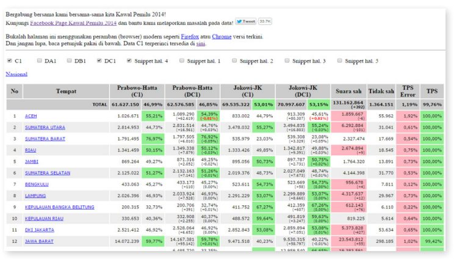

بلافاصله پس از انتخابات ریاستجمهوری سال ۲۰۱۴، بخش کنترل انتخابات (حفاظت از انتخابات در اندونزی) آغاز به کار کرد، چرا که این کشور از طریق قطبی شدن سیاسی و دو رقیب اصلی ریاستجمهوری که ادعای تقلب در انتخابات را رد و بدل کرده بودند، متحول شده بود. در مواجهه با این لحظه حساس در فرآیند در حال پیشرفت دموکراسی در اندونزی، یک گروه پراکنده جهانی از متخصصان فنآوری، فعالان و داوطلبان گرد هم آمدند تا وبسایتی ایجاد کنند که به شهروندان اجازه دهد تا اختلاف آرای رسمی را با جداول اصلی از ایستگاههای رایگیری مقایسه کنند. این جداول پیش از این به عنوان بخشی از تعهد کمیسیون عمومی انتخابات (KPU) نسبت به باز بودن و شفافیت، علنی شده بودند. با این حال، سازماندهندگان “کنترل انتخابات” نقش مهمی در گردآوری تیمی متشکل از بیش از ۷۰۰ داوطلب برای دیجیتالیسازی فرمهای دستنویس ایفا کردند و دادهها را خواناتر و قابلدسترستر کردند. این سایت تنها در عرض دو روز با بودجه کلی ۵۴ دلار مونتاژ شد. تاثیر کلی آن این بود که مشارکت شهروندان در نظارت بر نتایج انتخابات، افزایش اعتماد عمومی به سخنرانیهای رسمی و به طور کلی کمک به تسهیل یک انتقال دموکراتیک مهم را ممکن سازد.
- پروژههای موفق دادهباز به تعهد از پیش موجود دولت برای باز بودن و شفافیت دادهها وابسته هستند. اما علاقهمندان و فعالان در زمینه منابع دادهباز میتوانند نقش مهمی در گرفتن اطلاعات منتشر شده و در دسترس قرار دادن آنها ایفا کنند.
- زمانی که به شهروندان فرصت داده میشود، آنها تمایل دارند و قادر به ایفای نقش در دیجیتالیسازی و تجزیه و تحلیل دادهها به منظور حصول اطمینان از اینکه دولت به درستی کار میکند، هستند. کنترل انتخابات، اهمیت جمعسپاری را در اشکال مختلف آن نشان میدهد.
- پروژههای موفق دادهباز به بودجههای کلان یا یک تیم متمرکز نیاز ندارند. آنها را میتوان براساس یک بودجه محدود، توسط تیمهای پراکنده و غیرسلسلهمراتبی که ممکن است تا حد زیادی شامل داوطلبان باشند، ساخت.
- پروژههای دادهباز که وضعیت موجود را تحت تاثیر قرار میدهند، باید در برابر هک شدن و سایر حملات امنیتی محافظت شوند. با توجه به ماهیت سریع و تککاره بسیاری از این پروژهها، که به طور طبیعی آسیبپذیری آنها را افزایش میدهد، این یک موضوع بسیار مهم است.
۱. پیشینه و زمینه
فساد در اندونزی
تقاضای عمومی برای ایجاد شفافیت، پاسخگویی و دولت بهتر در اندونزی از زمان "اصلاحات"، جنبشی برای اصلاحات سیاسی که در دهه ۹۰ آغاز شد، به سرعت در حال رشد بوده است. با وجود این، فساد همچنان یک مشکل در کشور است. بر اساس شاخص ادراک فساد سازمان شفافیت بینالملل، اندونزی در سال ۲۰۱۴ در بین ۱۷۵ کشور رتبه ۱۰۷ را به خود اختصاص داد. شاخص رشوهپردازان آن، اندونزی را در سال ۲۰۱۱ از بین ۲۸ کشور رتبه ۲۵ را به خود اختصاص داد. بر اساس حسابرسی جهانی دموکراسی، اندونزی در سال ۲۰۱۴ از بین ۱۵۰ کشور در رتبه ۸۸ از نظر فساد قرار گرفت.
فساد در روند انتخابات نیز مشهود بوده است و هر دو انتخابات ۲۰۰۴ و ۲۰۰۹ با بینظمیهای ادعایی مشخص شدند. Perludem (www.perludem.org)، یک انجمن غیردولتی برای انتخابات و دموکراسی در اندونزی، مواردی از سیاست پولی، دستکاری در شمارش آرا، ارعاب و سوءاستفاده مقامات از موقعیتهای دولتی برای اضافه کردن نامزدها یا کمپینها را گزارش کرد. همانطور که دیاه ساتیواتی، مدیر برنامه Perludem برای رابط برنامهنویسی برنامههای انتخاباتی، میگوید: “نامزدها به طور معمول به رایدهندگان رشوه میدادند. آنها با پول، برنج و سایر محصولات غذایی به آنها رشوه دادند.” ناظران همچنین خاطرنشان میکنند که روند انتخابات اندونزی به طور خاص به دلیل اندازه و پیچیدگی آن، مستعد دستکاری در آرا است. ستیاواتی میگوید: "سیستم انتخاباتی ما یکی از پیچیدهترین سیستمهای جهان است. باید بیش از ۱۰۰، ۰۰۰، ۰۰۰ رایدهنده ثبتنامشده و جغرافیای پیچیدهای را در خود جای دهد که شامل بیش از ۱۷۰۰۰ نقطه مختلف است. این بسیار بزرگ است و همه چیز در یک روز اتفاق میافتد."
دادههای باز و انتخابات اندونزی
در سال ۲۰۱۱، اندونزی به مشارکت دولت باز (OGP) پیوست و بر تعهد ملی به شفافیت بودجه و ارائه خدمات عمومی کارآمدتر تأکید کرد. در سال ۲۰۱۴، ماردیانتو جتنا، دستیار رئیس واحد تحویل ریاستجمهوری برای کنترل و نظارت بر توسعه (UKP4)، "سال دادههای باز" را اعلام کرد. چندین ابتکار به عنوان بخشی از این سال داده باز به کار گرفته شد. یکی از آنها راهاندازی درگاه دادههای اندونزی بود که تقریبا ۷۰۰ مجموعه داده از ۲۳ موسسه دولتی را منتشر میکرد.
یکیدیگر از تلاشهای قابلتوجه منابع دادهباز، اقدامات کمیسیون عمومی انتخابات (KPU) برای آغاز اشتراکگذاری دادههای مربوط به انتخابات در اینترنت بود. KPU یک نهاد شبهدولتی است که وظیفه آن تضمین انتخابات شفاف و عادلانه میباشد. در آوریل ۲۰۱۴، در بحبوحه درخواستهای بالای شهروندان و احزاب سیاسی در همه طرفین، برای بهبود شفافیت و حفاظت از انتخابات ریاستجمهوری در اواخر همان سال، این کمیسیون تصمیم خود برای به اشتراک گذاشتن دادههای انتخابات در وبسایت رسمی خود (www.kpu.go.id/.) را گرفت.
شرایط سیاسی در آن سال به ویژه، دو قطبی شده بود. این اولین بار در تاریخ اندونزی بود که فقط دو نامزد در حال رقابت بودند (معمولاً سه یا چند نامزد هستند). علاوه بر این، سوابق و مشخصات نامزدها به طور چشمگیری متفاوت بود: پروبوو سوبینو سابقه نظامی داشت و با رژیم سابق سوهارتو در ارتباط بود، در حالی که جوکو ویدودو (جوکووی) به نسل جدیدتر تعلق داشت و از یک پسزمینه غیرنظامیتر بود. با توجه به دیاه ستیاوتی از Perludem، میزان قطبی شدن رایدهندگان با افزایش حضور آنها در رسانههای اجتماعی پررنگتر شد. اندونزی، چهارمین کاربران بزرگ فیسبوک در جهان در سال ۲۰۱۴، و جاکارتا فعالترین شهر جهان از نظر مشارکت توییتر در سال ۲۰۱۲ بود.
برخلاف این پیشزمینه بود که KPU تصمیم گرفت فرمهای جدولبندی رایدهندگان را از سطوح مختلف فرآیند رایگیری اندونزی منتشر کند. رایگیری در اندونزی به صورت دستی انجام میشود. شهروندان در یکی از بیش از ۴۷۰، ۰۰۰ حوزه رایگیری رای میدهند. سپس نتایج در شش سطح مختلف جدولبندی میشوند: حوزه رایگیری، ناحیه فرعی، ناحیه شهرستان، استان و سطح ملی. هر سطح از یک شکل متفاوت استفاده میکند، و زمان بین رایگیری واقعی و جدولبندی ملی میتواند بسیار طولانی باشد. پتانسیل تقلب - برای مثال، با دستکاری نتایج در طول مسیر - بسیار زیاد است. در ابتدا، در آوریل ۲۰۱۴، KPU اعلام کرد که باز خواهد شد و فرمهای جدولبندی نتایج را برای سطوح ۲ - ۶ در دسترس قرار میدهد. با این حال، این امر فرم جدولبندی محل رایگیری (فرم به اصطلاح C1) را از سطح اول (یعنی مکان واقعی رایگیری) کنار میگذارد. پس از فشار بیشتر از سوی گروههای جامعه مدنی و برخی رهبران سیاسی، KPU در جولای ۲۰۱۴ اعلام کرد که فرمهای C1 را نیز در دسترس قرار خواهد داد. سپس این فرمها در وبسایت KPU اسکن و منتشر شدند و به شهروندان و رسانهها سطح بیسابقهای از موشکافی نسبت به نتایج انتخابات ارائه دادند.
ابتکارات KPU به طور گستردهای مورد تحسین قرار گرفتهاست. آینون نجیب، یکی از بنیانگذاران Kawal Pemilu میگوید: "من واقعا باید KPU را برای این اقدام تحسین کنم. با این وجود، تلاشهای اولیه KPU از برخی جهات ناقص بوده و از آن زمان به بعد تلاشهای شهروندان تکمیل شدهاست. برای مثال، اشکال C1 اسکن شده با مطالب بسیار تکمیل شدند و در قالب غیرقابل خواندن توسط ماشین منتشر شدند (معمولا JPEG یا PDF)؛ اغلب کشف این اشکال دشوار بود و گاهی به صورت وارونه منتشر میشد.
برای پرداختن به این مشکلات (و سایر مشکلات مشابه)، تعدادی از برنامهها و وبسایتهای مستقل و راهاندازی شده توسط شهروندان از زمان انتخابات ریاستجمهوری ۲۰۱۴ پدیدار شدند. اولین درخواست تقریبا بلافاصله پس از انتخابات ۱۱ جولای منتشر شد، زمانی که یک کاربر توییتر با ۷۰۰۰ دنبالکننده شروع به ارسال فرمهای اسکن شده C1 کرد. کاربردهای دیگر دنبال شدند، هر کدام بخشهای مختلف داده باز KPU را بررسی کردند: برخی شکاف در خوانایی ماشین را با دیجیتالی کردن شکلهای C1 اسکن شده و در دسترستر کردن آنها پر کردند. کاربردهای دیگر مربوط به اشکال اسکنشده نواحی، شهری / اضطراری و سطح استان، نظارت بر نتایج در سطوح رایگیری؛ و دسته دیگری از کاربردهای به رهبری شهروندان اشکال C1 اسکن شده را برای مسائل یا بیقاعدگیها مورد بررسی قرار دادند. Kawal Pemilu، برنامهای که در اینجا مورد مطالعه قرار گرفت، یکی از موفقترین ابتکارات در این موج کاربردهای رایگیری به رهبری شهروندان بود.
۲. توصیف و آغاز پروژه
در تابستان ۲۰۱۴، عینون نجیب، که بعداً کاوال پمیلو را تأسیس کرد، در سنگاپور زندگی و کار می کرد. ماه رمضان بود و او هم مبتلا به سرماخوردگی بود. با این حال، او از نزدیک انتخابات را در زادگاه خود اندونزی دنبال میکرد، و با نگرانی رو به افزایش، شاهد قطبی شدن افراطی بود که مبارزات انتخاباتی را در دوره پس از انتخابات مشخص کرده بود، و همانطور که نتایج توسط اردوگاههای جوکووی و پروبوو مورد اعتراض قرار گرفت. در میان اتهامات تقلب و کلاهبرداری در انتخابات، نجیب شروع به بررسی راههایی کرد که میتوانست به روند انتخابات، شفافیت بیشتری ببخشد. او به فایننشال تایمز گفت: "ما به دلیل دو ادعای پیروزی که هیچکس نمیتواند آنها را تایید کند، باید کاری میکردیم تا از تکهتکه شدن ملت جلوگیری کنیم." در همین زمان، او به یکی از دوستانش، آندریان کورنیادی، کارمند گوگل در سیدنی پیام فرستاد. نجیب در سال ۲۰۰۷ در مسابقات قهرمانان المپیاد ریاضی با کورنیادی آشنا شده بود و با وجود اینکه دوستان صمیمی نبودند، در فیس بوک با هم ارتباط داشتند. این دو نفر به سرعت تصمیم گرفتند با یکدیگر همکاری کنند تا از شمارش آرای اندونزی محافظت کنند. بعداً سه دوست دیگر به آنها ملحق شدند که با آنها همکاری کردند تا برنامه را از کار بیاندازند.
در روزهای اول، Kawal Pemilu تلاش کرد تا با دیجیتالیسازی اشکال C1 اسکن شده و استفاده از روند شناسایی دستخط برای استخراج دادههای رایگیری، شکافهای خوانایی ماشین را در دادههای KPU پر کند. با این حال، آنها به سرعت با این رویکرد به موانع برخوردند و خیلی زود تصمیم گرفتند به نوعی جمعسپاری تبدیل شوند. به طور خاص، آنها تصمیم گرفتند تا داوطلبان را برای دیجیتالیسازی دستی تقریبا ۵۰۰۰۰۰ فرم C1 اسکن شده در سایت KPU استخدام کنند. این امر، پیدایش Kawal Pemilu ("حفاظت از انتخابات" در اندونزی) بود، که در ۱۲ جولای ۲۰۱۴ با هدف فراهم کردن سکویی در جهت مشارکت عمومی در حفاظت از نتایج انتخابات عمومی ۲۰۱۴ آغاز شد. همانطور که آندریان کورنیدی، یکی از بنیانگذاران نجیب، در آن زمان گفت: "امیدواریم که این سیستم بتواند عدم قطعیت، و ترس از تقلب در انتخابات را کاهش دهد و اعتماد عمومی را به یکی از مهمترین نکات در دموکراسی اندونزی بازگرداند [در حالی که هنوز در ابتدای کار است]."
برنامه Kawal Pemilu از دو جزء اصلی تشکیل شدهاست. در قسمت مبتدی، این سایت شامل یک وبسایت خصوصی و محصور است که در آن داوطلبان و مدیران سایت میتوانند دادههای رایگیری را براساس فرمهای اسکنشده وارد کنند (شکل ۱). علاوه بر این، یک سایت عمومی وجود دارد که به شهروندان اجازه میدهد تا دادهها را ببینند که توسط ایستگاه رایگیری و نامزدها دستکاری شدهاند (شکل ۲). بازدیدکنندگان میتوانند نتایج را برای سطوح مختلف فرآیند جدولبندی، مشاهده کنند. به عنوان مثال، یک بازدیدکننده میتواند انتخاب کند که فقط نتایج C1 را بررسی کند. نتایج همچنین میتوانند توسط بخش نظارت منطقه مشاهده شوند.
دادههای اساسی برای سایت از دادههای KPU از طریق شبکهای از داوطلبان که در سراسر جهان پراکنده شدهاند، تولید شدهاست. داوطلبان از طریق یک چارچوب و سری فیسبوک به کار گرفته شدند، که اطمینان حاصل کرد تنها افراد قابلاعتماد در آن عضویت دارند. برای شروع فرآیند جذب داوطلبان، هر موسس ۱۰ دوست قابلاعتماد را انتخاب کرد، که از هرکدام از آنها خواسته شد ۱۰ نفر دیگر را استخدام کنند، و همچنین از هر کدام از آنها خواسته شد ۱۰ دوست دیگر را استخدام کنند - و غیره. بیش از ۷۰۰ داوطلب تنها در طول سه روز به این شیوه استخدام شدند. اسامی و هویتهای داوطلبانه ابتدا مخفی نگهداشته شدند تا از هرگونه تلاش برای رشوه دادن یا ارعاب جلوگیری شود.
هر کارمند یک لینک مخفی به جز بخش غیرعمومی وبسایت دریافت میکند، که در آن فرمهای C1 اسکن شده با یک فرم همراه برای داوطلب برای پر کردن با دادههای استخراجشده ارائه شدهاست. این شکل همچنین امکان گزارش خطاها را فراهم میآورد. نتایج این کار هر ۱۰ دقیقه یکبار به وب سایت عمومی پست میشد که فقط خوانده میشد. این دادهها علاوه بر این که به شهروندان امکان نظارت بر نتایج انتخابات در زمان واقعی را میدهد، به آنها امکان مقایسه شمارش آرا ارائهشده در سایت با شمار رسمی منتشر شده توسط ایستگاههای رایگیری را نیز میدهد.

کل فرآیند ساخت سایت و جمعآوری تمام دادهها با کارایی قابلتوجهی انجام شد. از آنجا که موسسان مشترک در سراسر جهان پراکنده بودند (کالیفرنیا، سیدنی، سنگاپور، اندونزی، هلند، آلمان)، قادر بودند به صورت شبانهروزی کار کنند و از بازههای زمانی مختلف حداکثر استفاده را ببرند. این کار آنها را قادر ساخت تا وبسایت و سیستم شمارش را تنها در مدتزمان دو روز ایجاد کنند. علاوه بر این، تمام داوطلبان و موسسان به کار گرفتهشده، بدون دستمزد کار میکردند. در نتیجه، کل سرمایهگذاری برای راهاندازی، تنها ۵۴ دلار بود؛ این وجوه برای خرید دامنه و فضای وبسایت بر روی یک سرور میزبان مورد استفاده قرار گرفت. به طور کلی، Kawal Pemilu یک مثال تاثیرگذار از "شروع خدمات عمومی" است: علیرغم اینکه هرگز از سرمایه اولیه یا اکوسیستم تجاری به سبک سیلیکون بهره نبرده است، با تمام پویایی و سرعتی که مشخصه سرمایهگذاریهای تجاری با بودجه بسیار زیاد است، کنار هم قرار گرفت.
۳. تاثیر
Kawal Pemilu یکی از بسیاری از ابتکارات شمارش آرای جمعسپاری شده بود که در زمان انتخابات سال ۲۰۱۴ آغاز شد و براساس دادههای KPU ساخته شد. سایرین عبارت بودند از، کاوال سوارا (حفاظت از آرا)، شمارش حقیقی و سایت توملر به نام C1 یانگ آنه. با این حال، Kawal Pemilu به عنوان یکی از کاراترین و موثرترین طرحها شناخته میشود. در مقالهای در مورد "مبارزان فنآوری انتخابات اندونزی"، یکی از گزارشگران اندونزیایی این سایت را به عنوان "پرکارترین عملیات حرفهای" در میان تلاشهای مختلف توصیف کرد. Kawal Pemilu نیز به عنوان "پیشگامی در زمینه نظارت و مشروعیت بخشیدن به شمارش آرای انتخاباتی [۲۰۱۴] در خارج از دستگاه دولت" توصیف شدهاست.
تاثیر Kawal Pemilu را میتوان به چند روش اندازهگیری کرد:
تعیین نتایج انتخابات ۲۰۱۴
تا روز پنجم پس از انتخابات ۲۰۱۴ (چهار روز پس از راهاندازی سایت)، داوطلبان Kawal Pemilu ۴۷۰، ۰۰۰ یا ۹۷ درصد از فرمهای C1 اسکن شده را دیجیتالی کردند. در حقیقت، داوطلبان بر علیه یکدیگر رقابت کرده بودند تا بیشترین تعداد اشکال را بررسی کنند و فرآیند سریع و کارآمد توصیفشده در بالا را ترغیب کنند. براساس این اعداد، Kawal Pemilu (و شهروندان در حال دسترسی به سایت) توانست اثبات کند که شمارش آرا در واقع بسیار شبیه به نتیجه رسمی KPU بود (۵۳.۱۵ درصد برای جوکو ویدودو و ۴۶.۸۵ درصد برای پرابوو سوبیانتو)، که در آن زمان توسط اردوگاه پرابوو مورد اعتراض قرار گرفته بود.
یک ماه پس از انتخابات، زمینه شمارش آرا هنوز در حال رقابت بود و نتایج به دادگاه برده شد. کاوال پمیلو نقش مهمی در جلسات دادگاه ایفا کرد و شهادت آن - همراه با شهادت مقامات KPU و دیگر شاهدان خبره - بر تصمیم دادگاه برای اعطای انتخابات به جوکووی کمک کرد. به این ترتیب، نتایج انتخابات جمعسپاری شده به حل و فصل انتخابات کمک کرد، به برنده مشروعیت بخشید و به طور کلیتر، انتقال صلحآمیز قدرت در اندونزی را تضمین کرد.
افزایش اعتماد و مشارکت عمومی بیشتر
علاوه بر تاثیر مستقیم آن بر انتخابات ۲۰۱۴، Kawal Pemilu نیز تاثیر کلی بر فرآیند انتخابات و فضای سیاسی اندونزی داشتهاست که به افزایش شفافیت و اعتماد عمومی کمک میکند. همانطور که اوف برجیاویداگدا، استاد سیاست اندونزی در دانشگاه ولولونگ در استرالیا، که مطالعه Kawal Pemilu و اقدامات داده باز مشابه اندونزی را انجام داد، میگوید: "پروژههایی مانند Kawal Pemilu، سطح اعتماد در میان شهروندان را تسریع کردند. KPU [به سمت دادههای مرتبط با انتخابات آزاد] اعتماد را افزایش داد، اما کاوال پامیلو و دیگران مانند آن اعتماد را به چیزی بزرگتر تبدیل کردند. اقدامات آنها سطح اعتماد را افزایش داد.
اعتماد عمومی بیشتر، از بسیاری جهات، به مفهوم جدیدی از مشارکت شهروندان و ذینفعان در فرآیند سیاسی اندونزی تبدیل شدهاست. حس مشارکت در بیش از ۷۰۰ داوطلب که به جمعسپاری دادههای KPU کمک کردند، بیشتر مشهود است. اما ناظران همچنین به حس کلیتر توانمندسازی و انتظارات جدید از شفافیت اشاره میکنند. همانطور که مدیر برنامه Perludem برای رابط طرحریزی انتخابات در Perludem دیاه ستیاوتی میگوید: "Kawal Pemilu جنبشی را ایجاد کرد - حرکتی به سمت افزایش دادههای باز و ایجاد شفافیت در اندونزی. به عنوان مدرک، ستیاوتی به اقدامات داده بازمتعددی اشاره کرد که از Kawal Pemilu پیروی کردهاند (برای جزئیات بیشتر به زیر مراجعه کنید) و انرژی که در کنار این اقدامات تجربه میکند.
سیتیواتی میگوید: "اندونزیاییها اکنون قطعا مشتاق و مایل به مشارکت در برنامههای جمع سپاری شده هستند." "آنها میخواهند در روند سیاسی شرکت کنند."
کاهش قطبش
Kawal Pemilu در زمان قطبی شدن در اندونزی ظهور کرد. یکی از مهمترین (و شاید بلندمدت) اثرات آن میتواند کاهش فضای حزبی و تقسیم سیاسی باشد. ناظران اشاره میکنند از آنجا که این انتخابات یک تصویر مستقل، قابل تایید و غیرحزبی از نتایج انتخابات ارائه داد، به بهبود برخی از بیاعتمادیها و سوءظنهای متقابل در میان اردوگاههای سیاسی رقیب کمک کرد. برجوایداگدا گفت: "من فکر میکنم که آن شکاف بین دو گروه را بست." "این کار باعث شد مردم در مورد نتایج رسمی احساس بهتری داشته باشند، حتی اگر آن نتایج با نتایج شخصی آنها در تضاد باشد." به عنوان مدرک، Brajawidagda برخی از نظرات پست شده در رسانههای اجتماعی را نقل میکند - نظراتی که به اعتقاد مردم به نتایج نهایی، بدون توجه به تمایلات سیاسی آنها اشاره دارد. یک مثال که او نقل میکند این است که: "باورنکردنی است، کاوال پمیلو (شمارش نهایی) تنها ۰.۰۱ درصد منحرف می شود. عالی.... این رقم واقعی است." به طور کلی، برجیاویداگدا احساس میکند که در کمک به اعتبار نتایج انتخابات، Kawal Pemilu نقش مهمی در ترویج جو سیاسی مدنی در اندونزی ایفا کرد.
سیتیواتی موافق است. او میگوید: "سیاست پس از Kawal Pemilu هنوز بسیار قطبی بود." اما این حالت کمتر منفی بود. مردم میتوانند چیزها را از دیدگاه عینیتری ببینند."
۴. چالشها
کیفیت دادهها
پس از آن برای Kawal Pemilu و به طور کلی برای فضای سیاسی اندونزی چه اتفاقی میافتد؟ علیرغم موفقیتهای اولیه ابتکاراتی مانند Kawal Pemilu، فساد همچنان یک مشکل جدی در اندونزی است و دامنه وسیعی برای بهبود در فرآیند انتخابات وجود دارد. به منظور تغییر واقعی شرایط، کوال پمیلو (و دیگر پروژههای مشابه) نه تنها نیاز به مقیاسگذاری قابلتوجه دارد، بلکه ثابت میکند که آنها میتوانند فراتر از یک انتخابات واحد رشد کرده و دوام بیاورند. اگر قرار است این اتفاق بیفتد، باید بر چالشهای کمی غلبه کرد.
تغییرات قانونی
در واقع، حرکت KPU برای باز کردن دادههای انتخابات در سال ۲۰۱۴، تنها یک اقدام موقت بود، بدون اینکه هیچ بنیان قانونی ماندگاری داشته باشد. پس از موفقیت Kawal Pemilu و کاربردهای مشابه، یک فریاد عمومی برای قانونگذاری وجود دارد که نیاز به باز کردن دادههای انتخابات برای تمام انتخابات آتی دارد. سازمان Perludem نقش کلیدی در اعمال قوانین جدید و در تهیه پیشنویس نسخههای قانون پیشنهادی ایفا کردهاست. ستیواتی از Perludem میگوید: "Kawal Pemilu یک موفقیت قطعی بود، و علاوه بر آن احتمال ابداع قوانین جدید انتخابات در اندونزی را افزایش داد که بر شفافیت تاکید دارند."بنابراین چشماندازهای قانون جدید و فراگیرتر روشن هستند - اما تا زمانی که تصویب شود، دلیل شفافیت بیشتر در سیاستهای اندونزی، و به طور خاص برنامههای کاربردی مانند Kawal Pemilu، همچنان با چالشها مواجه خواهند شد.
امنیت
مانند هر پروژه دیگری، Kawal Pemilu نیز با برخی از منافع مقرره قدرتمند مواجه شدهاست. بلافاصله پس از راهاندازی، به نظر میرسید که برخی از این منافع شخصی به پاسخ واکنش نشان میدهند. چهار روز پس از ایجاد آن، این سایت توسط آنچه مدیران آن را "صدها هکر" مینامیدند مورد حمله قرار گرفت. در نتیجه، سایت برای چند ساعت از کار افتاد تا اینکه مدیران پروژه یک "بمب منطقی" را به مهاجمان خود بازگرداندند. علاوه بر این، مدیران یک نسخه مشابه از سایت عمومی را اجرا کردند تا آسیب بالقوه ناشی از هککردن را محدود کنند.
هویت هکرها ناشناخته باقی میماند، اما اعتقاد بر این بود که آنها در اندونزی هستند، و به طور گسترده به مشروعیت و محبوبیت رو به رشد وبسایت پاسخ میدهند. در این مفهوم، تلاشهای هک فقط یک نمونه خاص از یک تلاش عمومیتر برای سرقت پروژه یا تضعیف اعتبار آن بود. به عنوان مثال، در روزهای اولیه پروژه Kawal Pemilu، بنیانگذاران این پروژه برای پنهان کردن هویتشان (و افراد داوطلب آنها)، در تلاش برای خنثی کردن تلاشهای رشوهخواری یا ارعاب، دست به اقدامات بزرگی زدند. چنین تهدیداتی به احتمال زیاد تنها زمانی افزایش مییابند که Kawal Pemilu و دیگر طرحهای محبوب به دنبال ایجاد و افزایش میزان شفافیت در اندونزی باشند.
قابلیت اطمینان اطلاعات
در روزهای اول، Kawal Pemilu در مورد قابلیت اطمینان دادههای خود دچار شک و تردید شد. این شک و تردید با ناشناس ماندن داوطلبان آن افزایش یافت - به طور طعنهآمیزی، زیرا ناشناس بودن در واقع به گونهای طراحی شدهبود که حساسیت آنها نسبت به نفوذ را کاهش دهد و در نتیجه راهی برای اطمینان از قابلیت اطمینان بود. آنون نجیب میگوید که سازماندهندگان به طور منظم سوالاتی را از مردم در مورد پاسخگویی و تایید ورودیها مطرح میکردند. او و بقیه اعضای تیم همیشه وقت گذاشتند تا روششناسی خود را توضیح دهند و اشاره کردند که تمام دادهها در خود سایت قابل تایید است. در واقع، بازدیدکنندگان از سایت میتوانند بر روی هر بخش از اطلاعات کلیک کنند و فرم اسکن شده اصلی و اساسی را پیدا کنند، تا به فرم C1 از ایستگاه رایگیری اولیه به عنوان اثبات برسند. از این نظر، Kawal Pemilu شامل یک فرآیند داخلی مشروعیت است - که به غلبه بر شک و تردید عمومی کمک میکند (اگر نه کاملا با آن).
تأثیر سیاست پایدار
هر پروژه صادرکننده یا رویدادمحور با سوالاتی در مورد قابلیت بقا و پایداری آن در طول زمان مواجه است. برای Kawal Pemilu، سوال تنها این نیست که آیا پروژه میتواند دوام بیاورد یا خیر، بلکه این است که در بلندمدت چه شکلی میتواند داشته باشد. همان عواملی که اجازه ظهور سریع چنین ابتکاراتی را میدهند - ماهیت غیرمتمرکز و تککاره آنها - اغلب رشد در سازمانهای بزرگتر را دشوار میسازد. بنیانگذاران کاوال پامیلو به خوبی از این چالشها آگاه هستند. آنها میگویند که هنوز پاسخی ندارند، اما در حال بررسی استراتژیهایی برای اطمینان از پایداری بلندمدت Kawal Pemilu هستند.
۵. نگاهی به مسائل پیش رو
مزایای مورد انتظار برنامه داده پایه
مثال ارائهشده توسط Kawal Pemilu الهامبخش چندین اقدام منابع دادهباز دیگر با هدف افزایش شفافیت و کاهش فساد در اندونزی است. از برخی جهات، ما شاهد ظهور اکوسیستم دادهباز شهروندیمحور جدید در کشور هستیم، اکوسیستم منابع دادهباز شهروندی محور که اهداف آن را میتوان به طور گسترده به عنوان بهبود حاکمیت و افزایش دموکراسی تعریف کرد.
این اکوسیستم به احتمال زیاد در سالهای آینده تاثیرگذارتر خواهد شد و بسیاری از برنامهها و وبسایتهای جدید در حال حاضر شروع به احساس حضور آنها کردهاند. در اینجا، ما سه مورد از امیدوارکنندهترین آنها را برجسته میکنیم.
Kawal APBD
پس از مشارکت آن در زمینههای منابع دادهباز و انتخابات، یکی از بنیانگذاران Kawal Pemilu به نام آینون نجیب، سایت جدیدی را راهاندازی کردهاست که هدف آن، بهبود شفافیت بودجه و باز کردن آن برای جذب مشارکت شهروندان است. پروژه جدید او، کاوال APBD، نسخههای مختلفی از بودجههای دولتی را کنار هم قرار میدهد و به شهروندان اجازه میدهد تا در مورد اختلافات نظر دهند. به عنوان مثال، در یک مورد، این سایت به یافتن اختلاف بین بخش آموزش جاکارتای جنوبی و بخش بودجه آموزش شهر کمک کرد. علاوه بر اظهار نظر در مورد تفاوتها، شهروندان میتوانند تخصیص بودجه را "دوست داشته باشند" یا "دوست نداشته باشند"، و دادهها را تجسم کنند، بنابراین به آنها کمک میکنند تا فرآیند بودجه را بهتر درک کنند.
آقای نجیب گفت: "هدف از پروژه کاوال APBD این است که دادههای دولتی بیشتری را در دسترس قرار داده و برای مردم قابل ارائه باشد." او گفت: "ما قبلا از طریق Kawal Pemilu میدانستیم که مردم در آن شرکت خواهند کرد. ما امیدواریم که اطلاعات بیشتر و بیشتری از جانب دولت در معرض عموم قرار گیرد."
Mata Massa (چشم تودهها)
ماتا ماسا در واقع قبل از Kawal Pemilu، در آستانه انتخابات ۲۰۱۴ راهاندازی شد. این گزارش به شهروندان اجازه میدهد تا تخلفات مرتبط با مبارزات انتخاباتی و دیگر موارد نقض از طریق گوشیهای هوشمند خود را به هیات نظارت بر انتخابات عمومی (Bawaslu) گزارش دهند. برای مثال، شهروندان مواردی از خرید رای و نیز سایر تخلفات اداری را گزارش کردهاند. در کل، در حدود ۱۵۰۰ تخلف گزارش شدهاست (اگرچه گزارشها نشان میدهند که اقدامات پیگیری اندکی در واقع انجام شدهاست). این برنامه کاربردی که در اصل برای نظارت بر قابلیت اعتماد روزنامهنگاران راهاندازی شده بود، ایجاد شد و توسط اتحادیه روزنامهنگاران مستقل در اندونزی اجرا شد.
Kawal Pilkada
کاوال پیلکادا به دنبال تکرار تلاش Kawal Pemilu برای جمعسپاری فرمهای KPU C1 برای انتخابات منطقهای در دسامبر ۲۰۱۵ بود. پروژه حول یک مفهوم مشابه با Kawal Pemilu اما تحت رهبری متفاوت ساخته شدهاست. چالشهای متعددی در اینجا وجود دارد. یکی از آنها استخدام است. در حالی که شهروندان مشتاق مشارکت هستند، جمعسپاری چالشبرانگیزتر از تجربه Kawal Pemilu است. دیاه سیواتی، که تیمش به تیم کاوال پیلکادا کمک فنی میکند، میگوید در کل توطئههای کمتری در این انتخابات منطقهای وجود دارد، و رایدهندگان در مورد رهبران مناطق دیگر کمتر میدانند و کمتر به آنها اهمیت میدهند. کاوالپیلکادا نیز با محدودیت زمانی مواجه است. KPU به تازگی اعلام کردهاست که جداول مرتبط را به صورت آنلاین منتشر خواهد کرد، بنابراین تیم کاوال پیلکادا زمان کمی برای آمادهسازی دارد. محدودیت دیگر پیشروی فراوانی انتخابات منطقهای است که هر دو سال یکبار رخ میدهد. او گفت: "برای هر انتخابات، نظارت زیادی به طور همزمان وجود دارد. وضعیت سیاسی در هر منطقه متفاوت است. ما در هر جایی با چالشهای مختلفی مواجه هستیم."
رویهمرفته، این برنامهها و بسیاری دیگر از برنامههای موجود و درحالظهور، چشمانداز جدیدی را برای منابع دادهباز، شفافیت و پاسخگویی در اندونزی ایجاد میکنند. آنها نشان میدهند که داده میتواند توسط شهروندان عادی برای پاسخگویی دولت مورد استفاده قرار گیرد، و اگرچه بسیاری از آنها متوسط باقی میمانند، اما اثبات مفهوم بیشتر از پلتفرمهای ملی کامل است، آنها پیشنهاد میکنند که شهروندی که با اطلاعات توانمند شدهاست، در واقع میتواند تحول سیاسی واقعی را تحتتاثیر قرار دهد.